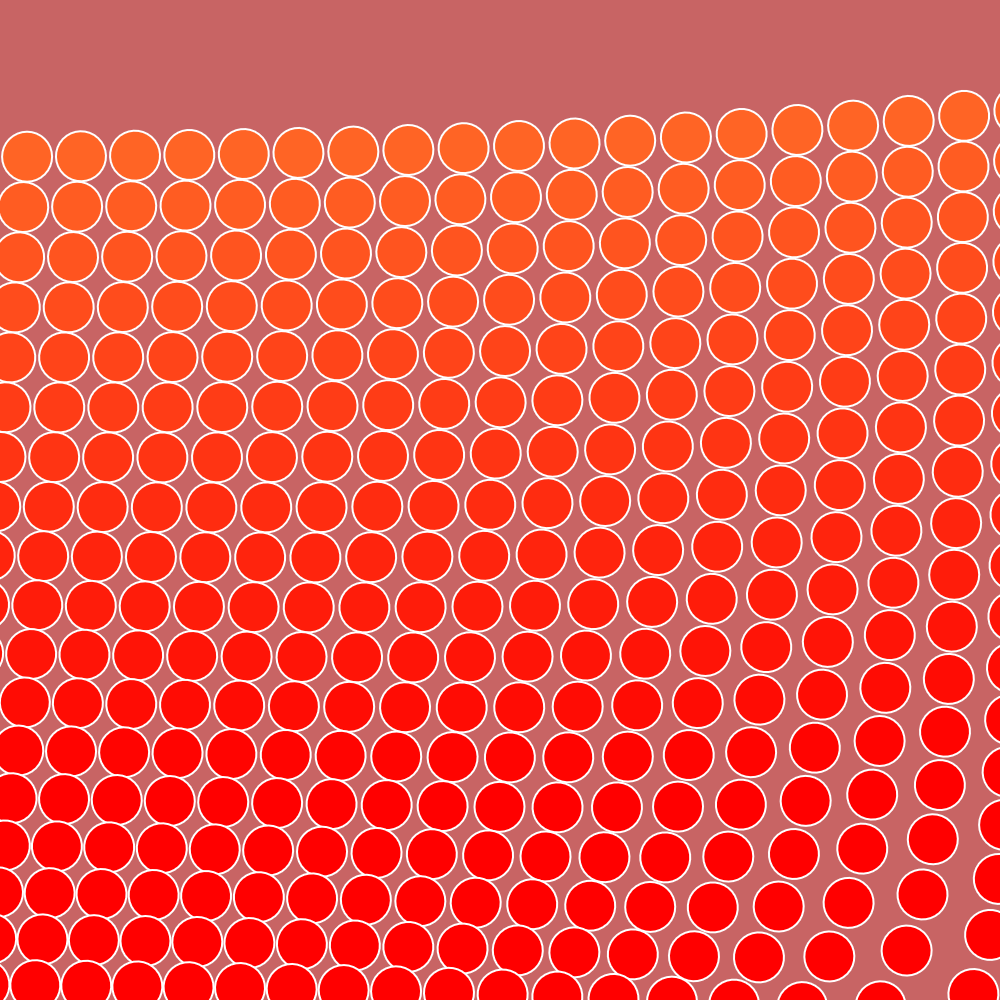
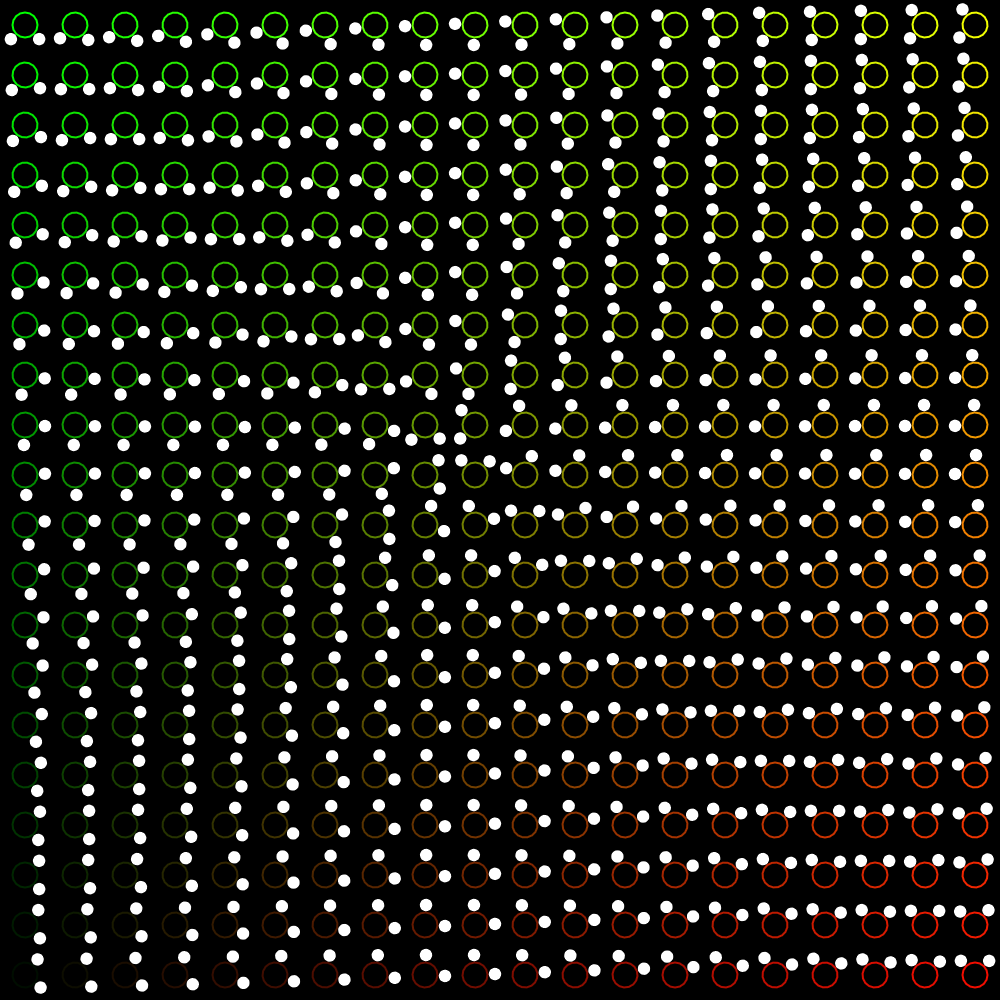
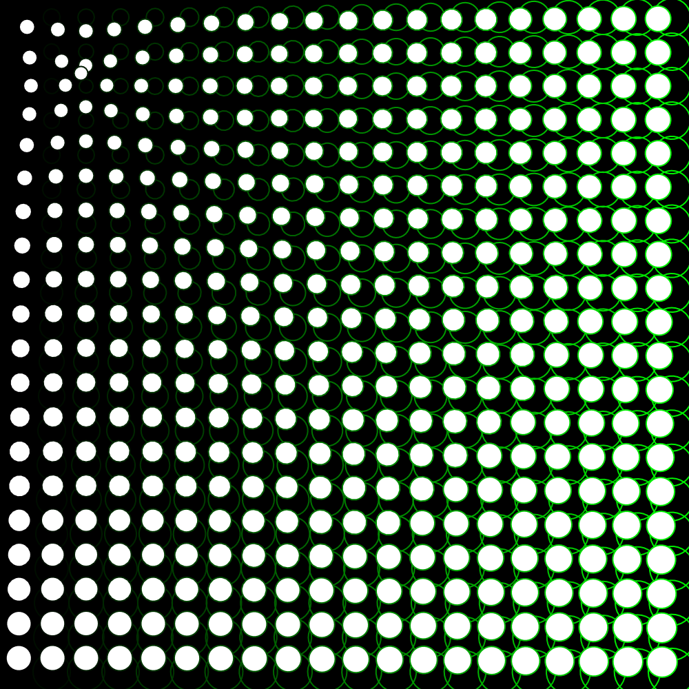
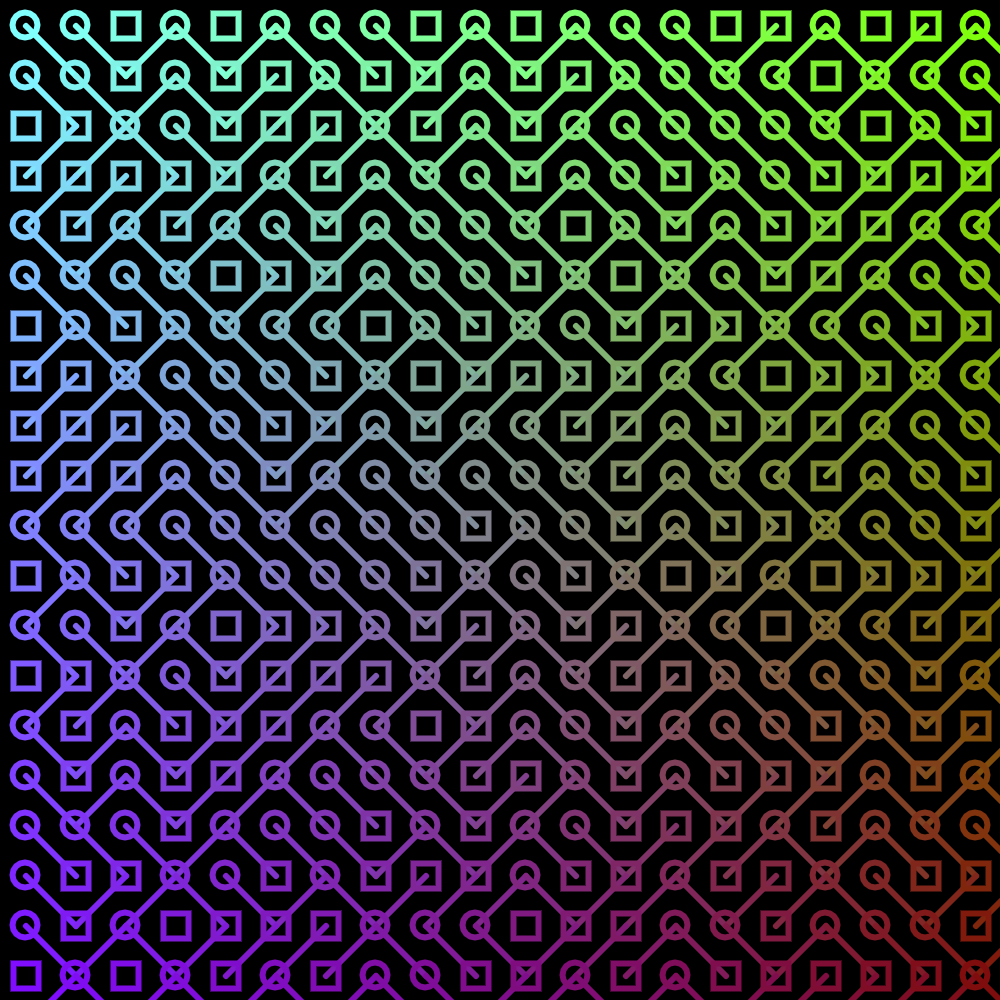
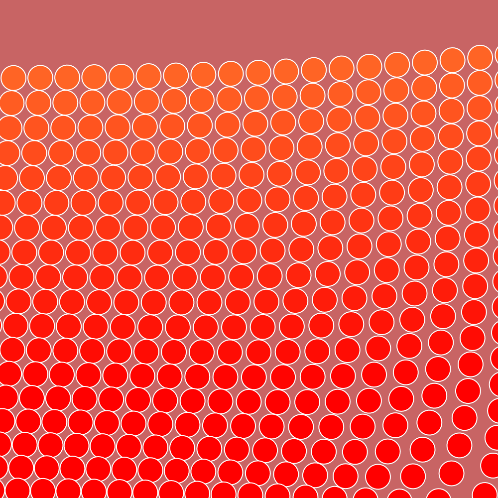

Generating lerp color within circles using p5.
Final concept of a circuitboard in blue using p5.

Final concept of a circuitboard in red using p5.

Final concept of a circuitboard in green using p5.

This is a webpage generated to showcase the work ive done throughout the year.
https://github.com/r0ssii
Generating shapes with the function aTan2 using p5.
Distance control of shapes with the mouse using p5.
Random generation of circles and squares joined by lines using p5.
Basic shape placement using p5.
Generating lerp color within circles using p5.
Final concept of a circuitboard in blue using p5.
Final concept of a circuitboard in red using p5.
Final concept of a circuitboard in green using p5.